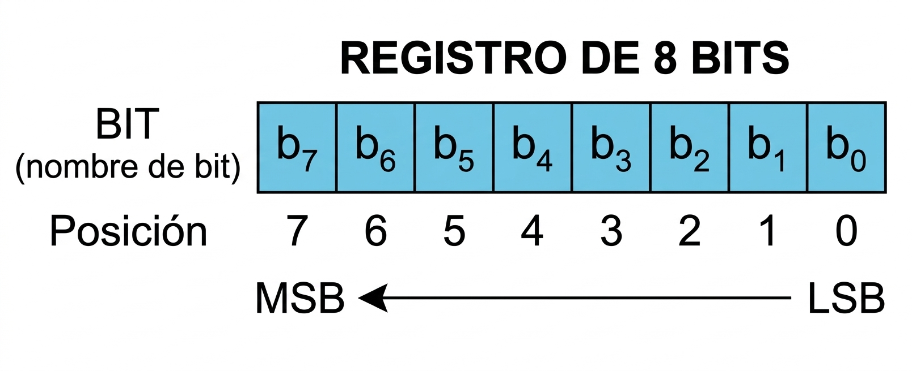
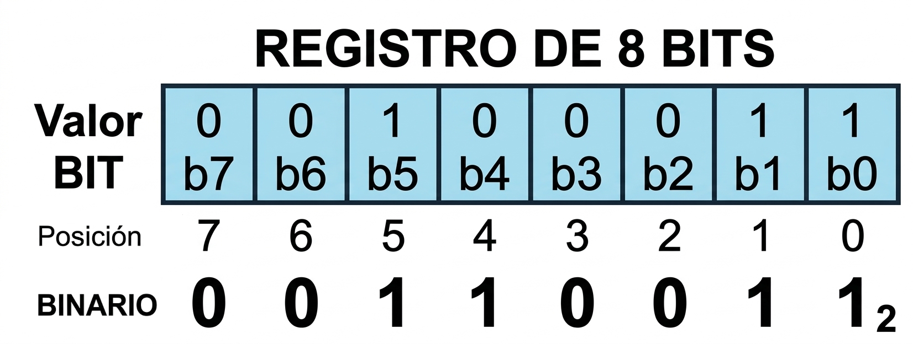
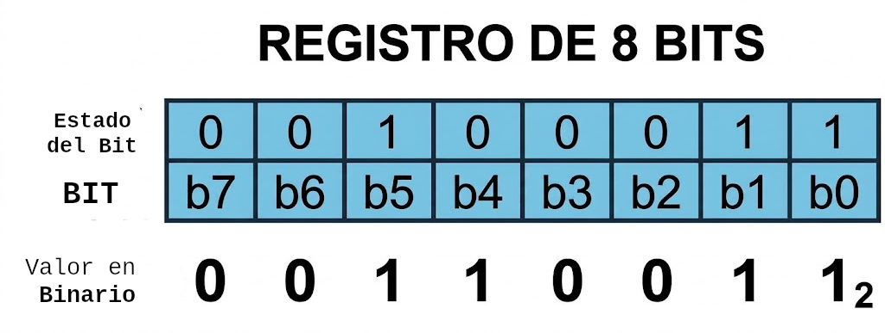
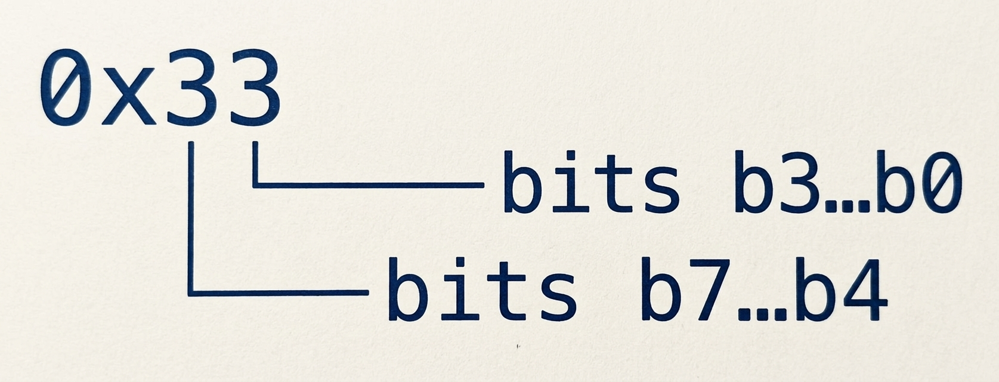
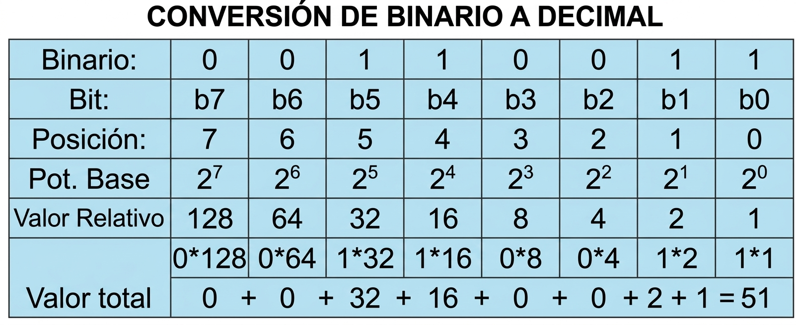
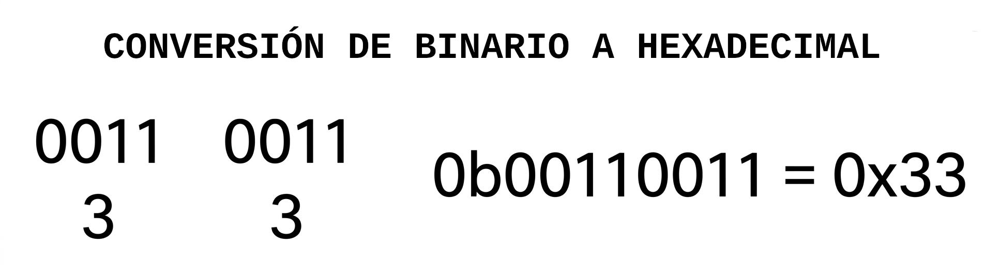

SISTEMAS DE NUMERACIÓN Y REPRESENTACIÓN DE UN REGISTRO DE 8 BITS
1. INTRODUCCIÓN
En la programación de microcontroladores es habitual trabajar directamente con registros cuyos bits representan estados o funciones específicas del hardware. En los microcontroladores AVR, muchos registros de propósito especial (Special Function Registers, SFR) tienen un ancho de 8 bits.
Para trabajar correctamente con estos registros es necesario comprender dos conceptos relacionados:
- Cómo se organiza y representa un registro de 8 bits;
- cómo puede expresarse un mismo valor numérico utilizando diferentes sistemas de numeración.
Un registro de 8 bits contiene ocho posiciones binarias independientes. Cada posición puede adoptar uno de dos estados: 0 o 1
Por esta razón, la representación binaria resulta especialmente útil cuando se trabaja directamente con los bits de un registro.
1.1 El principio de la indexación desde cero (Zero-Indexing) en C
El lenguaje C utiliza la indexación basada en cero (zero-indexing) para recorrer secuencias, matrices y conjuntos de bits. Por tanto, el primer elemento se identifica con el índice 0, el segundo con el índice 1, y así sucesivamente.
Al programar microcontroladores, esta convención refleja el funcionamiento interno del hardware y la aritmética de direcciones de memoria.
- En un registro de 8 bits, los bits se numeran desde el menos significativo (LSB) hasta el más significativo (MSB).
- El bit menos significativo se identifica como b0, el siguiente como b1, y así sucesivamente hasta el bit más significativo, que se identifica como b7.
- Al contar ocho elementos (o pines), la secuencia numérica estándar en C es: $0, 1, 2, 3, 4, 5, 6, 7$.
- El primer elemento de cualquier grupo se referencia mediante el índice 0, y el octavo y último elemento corresponde al índice 7.
1.2. Correspondencia entre bits y pines en un registro de 8 bits
En el caso de un registro de 8 bits, la indexación desde cero se aplica a cada posición del registro, numerando los bits desde el menos significativo (LSB) hasta el más significativo (MSB).
Por ejemplo, en un registro de 8 bits:
El bit menos significativo (LSB) se identifica como b0, el siguiente como b1, y así sucesivamente hasta el bit más significativo (MSB), que se identifica como b7.
Esta convención de indexación desde cero es fundamental para comprender cómo se accede y manipula cada bit individualmente en un registro de 8 bits en el lenguaje C.
En resumen, la indexación desde cero en C establece que el primer elemento de un conjunto se identifica con el índice 0, y en el caso de un registro de 8 bits, los bits se numeran desde b0 (LSB) hasta b7 (MSB).
1.3. Aplicación práctica: Mapeo de hardware y conexión de LEDs
Esta convención de indexación desde cero es fundamental para comprender cómo se accede y manipula cada bit individualmente en un registro de 8 bits en el lenguaje C.
2. EL REGISTRO DE 8 BITS
En los microcontroladores de arquitectura AVR, la estructura fundamental de datos se alinea con la longitud natural del bus del procesador: un byte compuesto por ocho bits. Los pines de entrada y salida (General Purpose Input/Output, GPIO) se agrupa físicamente en puertos de ocho pines (como PORTB, PORTC y PORTD). Esta correspondencia directa de uno a uno entre los ocho bits de un registro de control y los ocho pines físicos de un puerto simplifica notablemente el manejo del hardware a nivel de software.
2.1. Organización de los bits
Un registro de 8 bits puede representarse de la siguiente manera:

Cada posición representa un bit individual del registro.
El bit situado más a la derecha es el bit 0 (b0), denominado bit menos significativo (Least Significant Bit, LSB). El bit situado más a la izquierda es el bit 7 (b7), denominado bit más significativo (Most Significant Bit, MSB).
La numeración de los bits aumenta desde la derecha hacia la izquierda, comenzando en cero. Esto se conoce como la indexación desde 0
La indexación desde cero resulta natural si piensas en términos de una ubicación base y un desplazamiento (offset), que es precisamente la razón por la que se utiliza en C.
Si el registro de hardware del puerto B se encuentra en una determinada ubicación de memoria —el byte número cinco en el mega168, por ejemplo—, entonces la ubicación del primer pin está en el byte cinco más cero bits.
El segundo pin (PB1) se encuentra en el byte cinco más un bit, etc.
Si simplemente recuerdas pensar en el primer LED como “LED número cero” o “LED en PORTB + 0”, estarás preparado para comprender cómo accederemos posteriormente a bits individuales mediante desplazamientos de bits.
2.2. Ejemplo de un registro
Supongamos que un registro denominado X contiene en sus ocho posiciones los siguientes valores:
Registro X = 0b00110011La representación binaria permite observar directamente el estado de cada uno de sus ocho bits:

Por tanto:
b7 = 0 b6 = 0 b5 = 1 b4 = 1 b3 = 0 b2 = 0 b1 = 1 b0 = 1La ventaja de esta representación es que existe una correspondencia visual directa entre cada dígito binario y una posición concreta del registro.
3. SISTEMAS DE NUMERACIÓN
3.1. Qué es una base numérica
Un mismo valor numérico puede representarse utilizando diferentes sistemas de numeración. En programación de microcontroladores son especialmente importantes los sistemas decimal, binario, hexadecimal y octal.
La diferencia entre ellos está en la base utilizada para representar los valores:
| Sistema | Base | Dígitos utilizados | Prefijo en C | Ejemplo |
|---|---|---|---|---|
| Binario | 2 | 0–1 | 0b | 0b00110011 |
| Octal | 8 | 0–7 | 0 | 063 |
| Decimal | 10 | 0–9 | 51 | |
| Hexadecimal | 16 | 0–9 y A–F | 0x | 0x33 |
La elección de una representación no cambia el valor almacenado en la memoria del microcontrolador. Solamente cambia la forma en que el programador escribe y visualiza ese valor.
3.2. Prefijos utilizados en C
Las constantes enteras pueden escribirse utilizando diferentes bases. La forma habitual de identificarlas es mediante un prefijo:
| Representación | Base | Prefijo | Ejemplo |
|---|---|---|---|
| Decimal | 10 | Ninguno | 51 |
| Octal | 8 | 0 | 063 |
| Hexadecimal | 16 | 0x o 0X | 0x33 |
| Binaria | 2 | 0b o 0B | 0b00110011 |
4. EL SISTEMA BINARIO
El sistema binario utiliza únicamente dos dígitos: 0, 1
Esto coincide directamente con los dos estados posibles de cada bit de un registro digital.
Por ejemplo: 00110011₂, es una representación binaria de un valor numérico.
En un registro de 8 bits, los ocho dígitos permiten asociar visualmente cada posición con un bit:

De tal manera que el valor escrito en binario permite identificar inmediatamente qué bits contienen 1 y cuáles contienen 0.
4.1. El prefijo 0b. Identificación de un número binario
En lenguaje C, el prefijo 0b o 0B indica que el número escrito a continuación está expresado en base 2.
Por ejemplo:
0b00110011representa el mismo valor numérico que:
51 decimal, 33 hexadecimal, 063 octalLa letra b procede de la palabra inglesa binary.
La notación binaria con 0b fue incorporada originalmente por GCC como una extensión para escribir constantes binarias directamente en C y C++. En versiones modernas del estándar de C, esta notación también está contemplada por el lenguaje.
Para la programación de microcontroladores, la representación binaria resulta especialmente útil porque permite visualizar directamente el estado de cada bit de un registro.
4.2. Por qué se utilizan ocho dígitos en un registro de 8 bits
Es importante hacer una precisión conceptual: Un número binario no es necesariamente un número de 8 bits. La expresión:
00110011es una representación de un número en base 2 utilizando ocho dígitos binarios. Esto no significa que el valor numérico, por sí mismo, sea necesariamente un número de 8 bits.
Por ejemplo, las siguientes expresiones representan exactamente el mismo valor:
0b00110011 = 0b0110011 = 0b110011Todas representan:
51₁₀Los ceros situados a la izquierda no modifican el valor numérico.
Aunque no es obligatorio escribir los ceros iniciales, cuando se trabaja con un registro de 8 bits resulta conveniente utilizar siempre ocho posiciones:
0b00110011en lugar de:
0b110011La razón es principalmente visual y pedagógica. Los ocho dígitos permiten establecer una correspondencia directa entre cada posición binaria y cada bit del registro:
Esto resulta particularmente útil al trabajar con registros como DDRB, PORTB o PINB, donde cada bit está asociado con una función concreta del microcontrolador.
Por tanto, escribir los ocho bits no es una obligación del lenguaje C. Es una convención de escritura muy útil para hacer visible la correspondencia entre el valor escrito y un registro de 8 bits.
5. DIFERENTES FORMAS DE REPRESENTAR EL MISMO VALOR
Supongamos que queremos asignar a DDRB el valor correspondiente a:
00110011₂Podemos escribir:
DDRB = 0b00110011; // Binario
DDRB = 51; // Decimal
DDRB = 0x33; // Hexadecimal
DDRB = 063; // Octal
Las cuatro expresiones representan el mismo valor numérico:
0b00110011₂ = 51₁₀ = 0x33₁₆ = 063₈Por lo tanto, al realizar la asignación, el valor numérico escrito es el mismo. Lo que cambia es la forma de representarlo en el código fuente.
5.1. Representación binaria
DDRB = 0b00110011;Esta forma permite observar directamente el estado de cada bit:
Por ello, la representación binaria resulta especialmente clara cuando el objetivo es trabajar directamente con bits.
5.2. Representación decimal
DDRB = 51;El compilador interpreta 51 como una constante decimal:
51₁₀ = 00110011₂La expresión es válida, pero no permite visualizar inmediatamente qué bits contienen 1 y cuáles contienen 0.
5.3. Representación hexadecimal
DDRB = 0x33;El prefijo 0x indica que el número está expresado en hexadecimal.
Una ventaja importante de la representación hexadecimal es que dos dígitos hexadecimales permiten representar los ocho bits de un registro
En este caso:
0x33₁₆ = 0011 0011₂
Por esta razón, el hexadecimal es una representación muy utilizada en programación de microcontroladores, especialmente cuando se trabaja con valores y máscaras de bits (bit masks).
5.4. Representación octal
DDRB = 063;En esta notación, el cero inicial indica que se trata de una constante octal:
063₈ = 51₁₀ = 00110011₂Aunque es una representación válida en C, el octal es mucho menos utilizado que el binario y el hexadecimal en la programación moderna de microcontroladores AVR.
5.5. Elección de la representación según el objetivo
Las cuatro formas anteriores producen el mismo valor numérico, pero no ofrecen la misma utilidad para el programador.
| Representación | Ejemplo | Utilidad principal |
|---|---|---|
| Binaria | 0b00110011 | Visualizar directamente el estado de cada bit. |
| Decimal | 51 | Representar el valor numérico de forma convencional. |
| Hexadecimal | 0x33 | Representar de forma compacta los ocho bits y trabajar con máscaras. |
| Octal | 063 | Representar el valor en base 8; tiene menor uso en este contexto. |
Por ejemplo, cuando se quiere observar claramente qué bits se están estableciendo en un registro:
DDRB = 0b00110011;puede ser más fácil de interpretar que:
DDRB = 51;Mientras que para representar de forma compacta el mismo valor puede utilizarse:
DDRB = 0x33;La elección depende, por tanto, de qué aspecto del valor resulte más importante visualizar.
6. CONVERSIÓN ENTRE REPRESENTACIONES
6.1. De binario a decimal
Para convertir un número binario a decimal se considera el peso correspondiente a cada posición.
En un registro de 8 bits, las posiciones tienen los siguientes valores:
Bit: b7 b6 b5 b4 b3 b2 b1 b0 Peso: 128 64 32 16 8 4 2 1Para:
00110011₂los bits que contienen 1 corresponden a los pesos 32, 16, 2 y 1:
32 + 16 + 2 + 1 = 51Por tanto:
00110011₂ = 51₁₀
6.2. De binario a hexadecimal
La conversión entre binario y hexadecimal resulta especialmente sencilla porque cada dígito hexadecimal representa cuatro bits.
Un nibble es un conjunto de 4 bits (la mitad de un byte), que equivale exactamente a un dígito en el sistema hexadecimal. Si nos fijamos en la tabla de conversión, 4 bits (un nibble) puede representar 2⁴ = 16 valores diferentes (16 es la base del sistema hexadecimal), desde el 0000 (cero) hasta el 1111, quince en decimal o F en hexadecimal y es el digito más significativo en hexadecimal
Por tanto, un registro de 8 bits puede representarse mediante exactamente dos dígitos hexadecimales. El nibble superiors representa el dígito más significativo y el nibble inferiors representa el dígito menos significativo.
Por ejemplo para convertir un binario 0b00110011 a hexadecimal, separamos el binario de 8 bits en dos nibbles: 0011 y 0011
Convertimos cada nibble en hexadecimal, los dos dígitos resultantes forman el número hexadecimal equivalente
0b0011 = 0x3 . Por tanto:
00110011₂ = 0x33Esta relación explica por qué un registro de 8 bits puede representarse mediante exactamente dos dígitos hexadecimales.

7. APLICACIÓN EN REGISTROS AVR
La utilidad de estas representaciones se hace evidente cuando se trabaja directamente con registros de los microcontroladores AVR.
Por ejemplo:
DDRB = 0b00110011;permite identificar inmediatamente qué bits del registro DDRB contienen 1:
b7 b6 b5 b4 b3 b2 b1 b0
0 0 1 1 0 0 1 1Mientras que:
DDRB = 0x33;representa exactamente el mismo valor de una manera más compacta.
En registros como DDRB, PORTB y PINB, la representación binaria resulta particularmente útil para relacionar el valor escrito o leído con los ocho bits individuales del puerto.
8. RESUMEN
Un registro de 8 bits está formado por ocho posiciones binarias, numeradas desde b0 hasta b7. Cada posición puede contener 0 o 1.
b7 b6 b5 b4 b3 b2 b1 b0
↑ ↑
MSB LSB
Un mismo valor puede escribirse utilizando diferentes bases. Por ejemplo:
0b00110011 = 51 = 0x33 = 063Las cuatro expresiones representan el mismo valor numérico.
La diferencia está en la forma de visualización:
Binario → facilita observar los bits
Decimal → representa el valor numérico convencional
Hexadecimal → proporciona una representación compacta
Octal → representa el valor en base 8
Cuando se trabaja con registros AVR, la representación binaria de ocho posiciones resulta especialmente útil porque permite establecer una correspondencia directa entre cada dígito y cada bit del registro.
Comprender esta equivalencia es fundamental para trabajar posteriormente con operaciones a nivel de bit (bitwise operations), máscaras de bits (bit masks) y registros de control de los microcontroladores AVR.